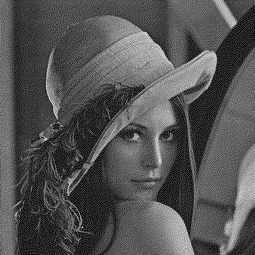
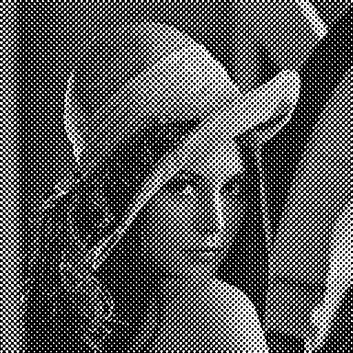

The test image we always use is the famous picture of Lena. The first step is to convert her from glorious technicolour to greyscale.
Here's Lena with random dither.
The approach we use is to scan from the top left. If a pixel is above 127, we replace it with a set pixel, if below 127 with an unset pixel. This generates an error between the true value of the pixel and the value we have set it to. So we distribute this error to a random neighbouring pixel.
Random dithering isn't a bad strategy. It creates a rather grainy image.

Here's Lena dithered with Floyd-Steinberg error diffusion.
With Floyd-Steinberg error diffusion we distribute the error like this.
| * | 7 | |
| 3 | 5 | 1 |
Here's Lena dithered with Stucki error diffusion.
These are the weights for Stucki halftoning.
| * | 8 | 4 | ||
| 2 | 4 | 8 | 4 | 2 |
| 1 | 2 | 4 | 2 | 1 |
Here's Lena dithered with dispersed dots.
Dispersed dots works on different principle. We create a sort of checkerboard of threshold values. The checkerboard is then tiled over the image. Pixels are set or unset depending on whether they excedd the threshold at the local point. So regions of fairly constant colour will be replaced with a regular pattern, with the dots distributed so they are far from each other.
Here we see Lena with 1, 2, 3 and 4 order grids.

Here's Lena dithered with clustered dots.
Clustered dots work on the same principle as dispersed dots, except that instead of the threshold values being in a checkerboard pattern, they are arranged in a circle. Actually The thresholds consist of four cicles arranged in a grid, two positive and two negative.
The result is that you get coherent dots. This is more suitable for newspaper-style printing processes. We see Lena with 3, 4 and 8 order grids.